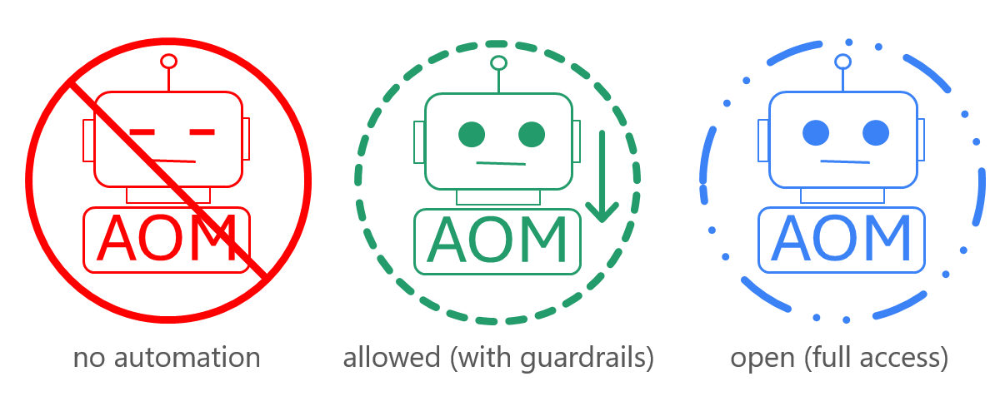
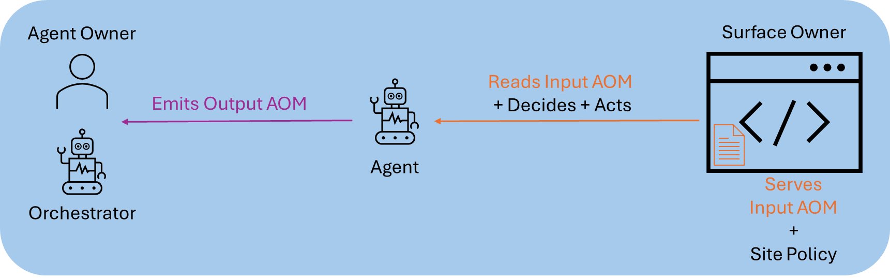

AI agents need to read and act on web content, but the web was designed for human eyes. Today agents consume raw HTML, unstable DOM structures, and visual layouts with little explicit information about tasks, workflows, or safety constraints—leading to brittle automations, wasted tokens, and limited trust.
The Agent Object Model (AOM) is a task-centric, entity-driven JSON standard for representing web pages and application screens as automation-aware “surfaces”. Agents consume structured AOM documents that describe purpose, tasks, entities, actions, state, navigation, and signals, with explicit automation policies. AOM clearly separates Input AOM (published and owned by site and application owners) from Output AOM (produced and owned by agent owners and orchestrators).
This white paper introduces the motivation, architecture, Input and Output AOM models, automation policy, and adoption path. The canonical specification, schemas, and reference validators are hosted at agentobjectmodel.org; plugins, agent kits, and a browser extension are available at aom.tools. The goal is a neutral, implementation-friendly foundation for agent-friendly web experiences.
Most agents operate at the HTML or DOM level, receiving pages full of layout markup, CSS, scripts, and ads. Element identifiers change between renders; there is no standard way to declare what tasks a page supports or what constitutes success or failure. Consequences include token waste, brittle selectors, poor task awareness, multi-step fragility, and limited safety controls. Existing structured data (schema.org, ARIA, microformats) helps with content description and accessibility but does not provide a complete model of interactive workflows or automation policy. AOM addresses these gaps.
AOM defines a JSON representation for “surfaces”—screens, pages, or panels that agents can perceive and act upon. Each surface describes purpose, tasks, entities, actions, state, navigation, and signals. A related schema defines how agents express decisions and outcomes (Output AOM). Principles: task-centric, entity-driven, action-oriented, state-aware, layout-free, automation-aware, and ownership-clear (Input AOM from sites, Output AOM from agents).
/.well-known/aom-policy.json) advertising the site’s default automation policy.Every surface declares an automation_policy with exactly one of three values: forbidden, allowed, or open. The ecosystem also publishes optional policy badges so people can see posture at a glance; agents always use the JSON field as the source of truth.

automation_policy values. On-screen labels are illustrative; the normative definitions are in the specification and schemas.Input AOM flows from sites to agents; Output AOM flows from agents to the orchestrator and user. Sites do not store or interpret agent-internal reasoning. The following diagram summarizes where AOM applies.

The canonical specification, schemas, examples, and reference validators are at agentobjectmodel.org (versioned spec documents, JSON schemas for Input AOM, Output AOM, and site policies, example surfaces, and Python/Node CLI tools for validation). Complementary tooling—plugins for web frameworks, agent kits, and a browser extension for inspecting and exporting AOM—is available at aom.tools. The ecosystem is designed so any framework or runtime can adopt the standard without being tied to a specific vendor.
An Input AOM surface includes: identity and metadata (version, surface identifier, kind, generation timestamp, optional generator); purpose (primary goal, user roles); context (application name, locale, etc.); tasks (identifiers, labels, input/output entities, success conditions); entities (named domain objects with schemas and optional current values); actions (operations with identifiers, categories, input/output entities); state (session, workflow position); navigation (breadcrumbs, neighbors); signals (errors, warnings, notifications); and automation_policy (forbidden, allowed, or open).
Surfaces may also include an optional calling_agent object. When present, it can declare that when the agent submits a request on this site it must include agent_id (and optionally agent_name) in the action-invocation request—supporting traceability and logging by the site. Fields such as agent_id_required and agent_name_required express these requirements.
{
"aom_version": "0.1.0",
"surface_id": "app:auth:login",
"surface_kind": "screen",
"automation_policy": "allowed",
"generated_at": "2025-01-01T00:00:00Z",
"purpose": {
"primary_goal": "Authenticate the user and establish a session.",
"user_roles": ["guest", "anonymous"]
},
"tasks": [{ "id": "login", "label": "Sign in", "input_entities": ["LoginCredentials"] }],
"entities": {
"LoginCredentials": {
"schema": {
"username": { "type": "string", "required": true },
"password": { "type": "string", "required": true }
}
}
},
"actions": [{ "id": "submit_login", "label": "Log In", "category": "mutation", "input_entities": ["LoginCredentials"] }]
}A full valid surface also includes state, navigation, and signals. See the spec and schemas for the complete contract.
Users interact only with a Master Agent, which orchestrates Worker Agents. When a Worker performs a task on a site, it first fetches the site policy at /.well-known/aom-policy.json. If the policy is forbidden, the Worker exits and informs the Master (and thus the user). If allowed or open, the Worker interacts with surfaces. For each surface, the site serves Input AOM; the Worker reads it and checks the per-surface automation_policy. If the surface is forbidden, the Worker exits; otherwise it checks whether it has enough data. When more information is needed, the Worker asks the Master, which prompts the user and relays the response. Once the Worker has sufficient data, it submits an action; the site navigates to the same or next surface, and the loop continues. On success or terminal failure, the Worker converts the final Input AOM and its reasoning into Output AOM and sends it to the Master, which presents a summary to the user. This keeps Input AOM owned by sites and Output AOM owned by agents.
Output AOM supports single-shot (one action and result) and flow (multiple steps until completion). Key sections: mode (single or flow); agent_id (identifier of the agent; when the surface declares calling_agent.agent_id_required, the agent must include this in the output and in the action-invocation request to the site for traceability); agent_name (optional human-readable name; include when the surface requires it or for logging); key_issuer (optional issuer of agent_id, e.g. aom.tools); thought (optional reasoning); action (action_id matching the Input AOM surface, plus params); result (outcome when complete); meta (e.g. done, confidence); and optional error.
{
"mode": "single",
"agent_id": "login-bot",
"action": { "action_id": "submit_login", "params": { "username": "user@example.com", "password": "••••••••" } },
"meta": { "done": true, "confidence": 0.95 },
"thought": "Submitting the provided credentials using the primary login action.",
"result": { "ok": true, "user_id": "user1234" }
}Figure in §2.3 summarizes the three modes. Normatively, a site-wide policy document at /.well-known/aom-policy.json declares the default automation behavior for the domain. Per-surface automation_policy refines or overrides it. forbidden: no automation on that surface. allowed: automation with guardrails—agents act only through AOM-defined tasks and actions. open: permissive; agents may go beyond the AOM when reasonable while obeying global safety rules and explicit prohibitions. Optional badge assets and HTML examples for publishers are maintained on the usage guide at agentobjectmodel.org.
agentobjectmodel.org hosts the primary reference: versioned spec documents, JSON schemas for surfaces and outputs and site policies, example surfaces and outputs (login, e‑commerce, forbidden pages), and Python/Node CLIs (aom.py, aom.mjs) for validation, golden-output generation, and demo agents. Supporting docs include COMMANDS.md and CONTRIBUTING.md.
aom.tools aggregates developer-facing resources: plugins for web frameworks (e.g. WordPress, Next.js, Nuxt, Gatsby, Shopify, static sites), agent kits (Python, Node), and a browser extension for inspecting pages and exporting AOM. Downloads and documentation are available at aom.tools/downloads. These tools are complementary to the core spec and can be extended or replaced by third-party implementations.
Adoption can proceed incrementally: (1) Start with one high-value surface (e.g. login or a funnel step). (2) Define the Input AOM surface using the reference schemas and examples. (3) Serve a site policy at /.well-known/aom-policy.json. (4) Validate with the reference CLI tools. (5) Connect agent frameworks to AOM surfaces. (6) Expand coverage and refine policies as needed.
AOM uses explicit versioning: Input AOM documents include aom_version; the reference repository organizes schemas and examples by version. Breaking changes are reserved for major versions; minor versions add clarifications and optional fields. Backwards compatibility and migration are documented in the spec and CHANGELOG. The reference repository welcomes contributions to spec text, examples, and tooling.
AOM complements schema.org (content entities) and ARIA (accessibility): AOM focuses on interactive surfaces, tasks, and automation policy. Tooling protocols such as agents.json describe backend capabilities; AOM’s binds_to on actions can reference such registries, keeping UI-level (AOM) and API-level contracts separate. Agent-to-Human (A2H) protocols fit naturally in the Master Agent, which translates Worker requests into human-facing messages and feeds responses back into the AOM loop.
Site owners gain safer automation, clearer agent behavior, and easier debugging via explicit policies and structured signals. Agent developers can reduce prompt complexity, implement reusable policies across sites, and rely on standardized output formats. End users benefit from more predictable and transparent agent behavior and visible guardrails.
The Agent Object Model offers a practical path from a human-centric, DOM-centric web to an agent-friendly, task-centric one. By separating Input AOM (site-owned) from Output AOM (agent-owned) and supporting clear automation policies, AOM enables safer, more reliable automation while preserving implementation flexibility. Implementers can start by exposing at least one surface, validating it, and connecting an agent that emits Output AOM. The canonical specification and tools are at agentobjectmodel.org; additional tooling and downloads are at aom.tools.